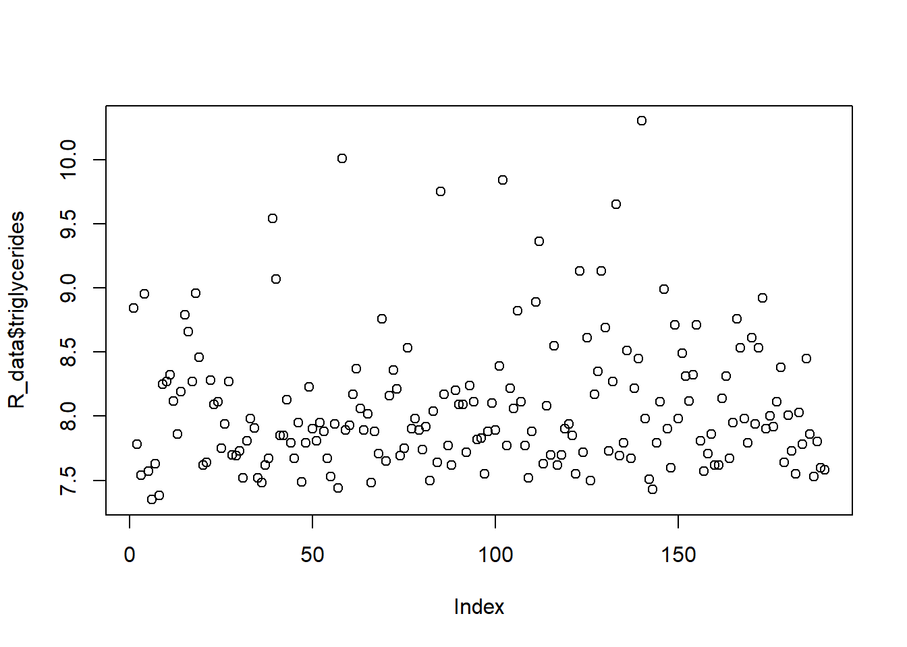

What functions are useful for the first exploration of the data? How many observations and variables are in the data set? What type of variables are there?
with dim() and str() we can find out the dimensions of the data and the type of variables. The function head() can be used to view the first couple of observations.
The variables pregnancy_length_weeks and pregnancy_length_days together denote the total length of the pregnancy. For example: pregnancy_length_weeks = 38 and pregnancy_length_days = 4, means this patient is pregnant for 38 weeks plus 4 days. Combine the variables to obtain the length of the pregnancy in days.
Verify by evaluating the first 12 values of this new variables (there are several ways to do this).
Divide the variable BMI into categories: <18.5 (“Underweight”), 18.5 - 24.9 (“Healthy weight”), 25 - 29.9 (“Overweight”), and >30 (Obesity). How many patients (and %) are in each category?
For a current analysis, I am only interested in the patients with “Healthy weight”. Additionally, I only want to look at the relation between Status and birthweight. Make a data set with only these two variables and patientnumber, for a subset of the data with the patients with “Healthy weight”.
What are the dimensions of this data set? First try to think yourself and then check with R code.
Give this data set a different name, so you don’t overwrite the original data set.
There are several biomarkers collected in the data set. Investigate whether there are outliers in the biomarkers: cholesterol, triglycerides, and vitaminB12. Which functions did you use?
# Cholesterolhist(R_data$cholesterol)
plot(R_data$cholesterol)
boxplot(R_data$cholesterol)
summary(R_data$cholesterol)
Min. 1st Qu. Median Mean 3rd Qu. Max.
15.10 16.30 16.80 16.94 17.50 20.30
# triglycerideshist(R_data$triglycerides)
plot(R_data$triglycerides)

boxplot(R_data$triglycerides)
summary(R_data$triglycerides)
Min. 1st Qu. Median Mean 3rd Qu. Max.
7.350 7.710 7.925 8.068 8.270 10.300
# vitaminB12hist(R_data$vitaminB12)
plot(R_data$vitaminB12)
boxplot(R_data$vitaminB12)
summary(R_data$vitaminB12)
Min. 1st Qu. Median Mean 3rd Qu. Max.
201.0 307.0 370.5 409.7 463.0 3360.0
In question 9 we found an outlier. How do you deal with this outlier?
Knowing that the value of 3360 is an impossible value for vitamin B12, we can decide to remove this measurement. We can either put this measurement to missing (NA)